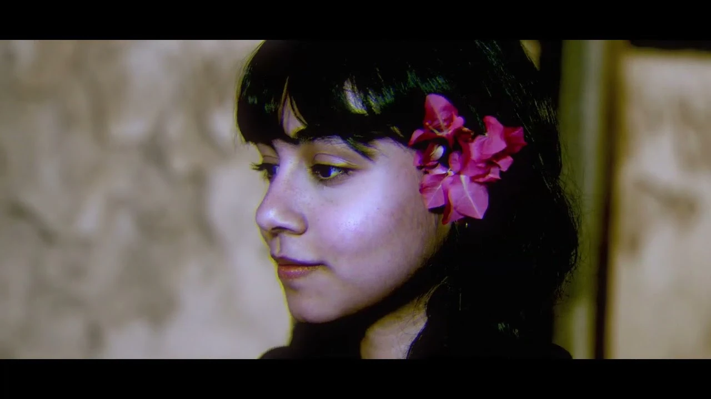
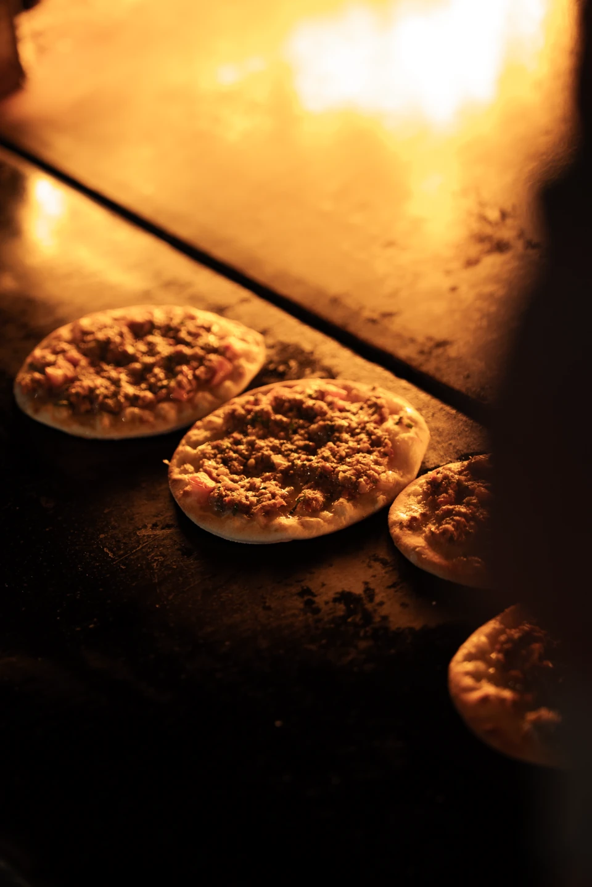
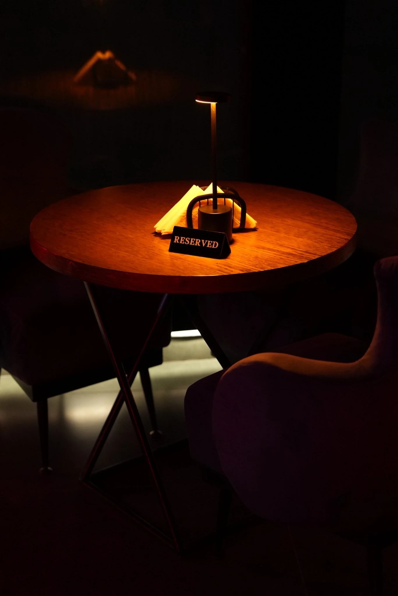

TAREQ ALBARQAWI.

Selected work
FILM INDEX.
Open a title for the original credits, a still, and a frame timeline where available.
01A Quiet TrailShort film
02Deer Scene3D environment
03ElhamDocumentary
04VFX & 3D IntegrationVFX
05PlaythingsAnimation

Solo Creator - 3D Animation · 16:9
An independent 3D animated short focusing on suspense and stylized storytelling.
Open YouTube referenceYouTube project · no native frame sequence in V7.
06Vision Types SimulationMotion design
07Acuity ComparisonMotion design

3D & Motion Designer · 9:16
A split-screen technical visualization comparing optical conditions side-by-side.
Open YouTube reference33 stills from the original video. Playback uses an external link where available.
08Social CampaignsCommercial

Videographer & Editor · 9:16
High-end commercial videography tailored for engaging brand marketing campaigns.
Open YouTube reference33 stills from the original video. Playback uses an external link where available.
Photography · 9 frames
THE
CONTACT
SHEET.
From the oven’s glow to the quiet of a room after dark. Select any image for the full frame.








END OF REEL
THAT’S A
WRAP.

For the next project, let’s talk.
Emailtariqbarqawi71@gmail.com WhatsAppMessage on WhatsApp Instagram@tarix.mov Phone+973 3330 2904